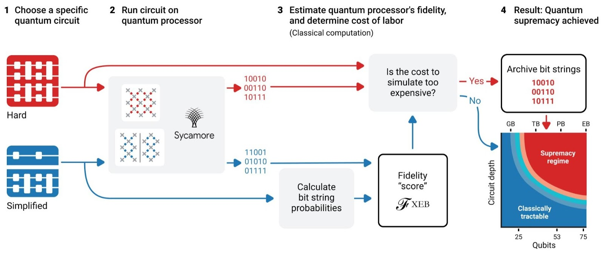

Case 1: Google Quantum AI
Overview & Problem Statement
Google's Quantum AI initiative aims to harness quantum computing to solve complex problems that classical computers find challenging.
The Quantum processors are designed to accelerate tasks in optimization, simulation, and machine learning using advanced quantum algorithms.
The primary goal is to enable quantum computers to outperform classical systems in specific problem domains, such as:
- Sampling problems that are computationally intensive
- Optimization tasks with large solution spaces
- Quantum chemistry simulations requiring high accuracy
Challenges
- Building stable, error-corrected qubits
- Minimizing decoherence and noise
- Scaling qubit counts while keeping error rates in check
- Developing algorithms for NISQ (Noisy Intermediate-Scale Quantum) devices
Existing Design & Algorithms
- Processor: Sycamore (54-qubit superconducting chip)
- Algorithms:
- Quantum Supremacy (random circuit sampling)
- QAOA – Quantum Approximate Optimization Algorithm
- VQE – Variational Quantum Eigensolver
Complexity Overview
| Algorithm |
Time Complexity |
Qubit Requirement |
Use Case |
| Random Circuit Sampling |
Exponential (classical) |
50+ |
Quantum supremacy |
| QAOA |
Problem-dependent |
Scalable |
Optimization |
| VQE |
Ansatz-specific |
~20–50 |
Quantum chemistry |
Real-time Usage & Figures
- 2019: Sycamore solved a problem in 200 seconds vs. 10,000 years on a classical supercomputer
- Applications in quantum chemistry, cryptography, and ML prototypes
- NISQ devices currently support ~50–100 noisy qubits
Other Applicable Algorithms
- Quantum Phase Estimation
- Grover’s Search
- Quantum Fourier Transform
- Quantum Machine Learning: QSVM, QNN
Benefits & Business Impact
- Exponential speedups for specific computational tasks
- Breakthroughs in optimization, simulation, and logistics
- Revolutionizing drug discovery via quantum chemistry simulation
- Enabling quantum-native AI systems beyond classical capabilities
- Advancing quantum hardware/software co-design innovation
- Unlocking new efficiencies in materials science and secure communication
Research & Insights
Though the exact proprietary algorithms and code are not publicly
available, Google has published papers on quantum supremacy and
related algorithms like the Variational Quantum Eigensolver (VQE).
My Thoughts
This use case demonstrates cutting-edge innovation, and while the underlying technology is complex,
its potential impact on industries is vast. Understanding and adapting such advances could position
future tech solutions on the frontier of AI and computing. An interesting coding approach I found
valuable is dynamically generating qubits,this enables scalable, cleaner circuits and supports
adaptable quantum algorithm design more effectively than static declarations.
Technology Stack
Languages: Python (Cirq)
Hardware: Superconducting Qubits, Surface Code
Research Paper:
Nature, 2024
Applications
- Drug discovery through quantum simulation
- Secure communications via quantum cryptography
- Accelerating AI models using quantum machine learning
Architecture Insight

Case 2: Advancements in Gemini AI
Overview & Problem Statement
Gemini AI represents a next-generation artificial intelligence system integrating large language models
with advanced reasoning and multimodal capabilities to deliver highly contextual, accurate, and creative AI responses.
The core goal is to push AI beyond current limits by enabling:
- Multimodal understanding combining text, images, and other data streams
- Improved contextual reasoning for complex problem-solving
- Adaptive learning that customizes interactions dynamically
Challenges
- Balancing model size with efficiency and latency
- Ensuring robust understanding across diverse inputs
- Maintaining ethical considerations and bias mitigation
- Scaling multimodal models while preserving accuracy
Existing Design & Algorithms
- Architecture: Transformer-based large language and vision models
- Key Components:
- Multimodal encoders integrating language and vision data
- Few-shot and zero-shot learning algorithms
- Reinforcement learning with human feedback (RLHF)
Complexity Overview
| Model |
Compute Complexity |
Data Requirements |
Use Case |
| Gemini Core Transformer |
O(n²) with respect to input length |
Massive multimodal datasets |
General AI reasoning |
| Vision-Language Fusion |
Varies by input size and modality |
Image and text paired data |
Multimodal understanding |
| RLHF Optimization |
Dependent on feedback iterations |
Human-labeled preference data |
Response alignment and safety |
Real-time Usage & Figures
- Deployment across search, chatbots, and content generation platforms
- Demonstrated improvements in contextual accuracy and reduced hallucinations
- Supports millions of concurrent users worldwide
Other Applicable Algorithms
- Attention Mechanisms (Self and Cross Attention)
- Contrastive Learning for multimodal alignment
- Knowledge Distillation to optimize model size
- Federated Learning for privacy-preserving model updates
Benefits & Business Impact
- Enhanced AI usability across diverse domains and media
- More natural and accurate AI-human interactions
- Reduced content creation costs through automation
- Improved decision making via AI-powered insights
- Innovations in AI safety and ethics integration
Research & Insights
Gemini AI builds on recent advances in large language models and multimodal transformers, incorporating
extensive human feedback loops and privacy-aware learning. The project emphasizes robust, ethical AI deployment.
My Thoughts
Gemini AI exemplifies the next frontier of AI, merging multiple data streams into cohesive understanding.
The challenge of balancing scale with responsiveness is notable, and I find the integration of
adaptive learning and ethical safeguards particularly promising for real-world applications.
Technology Stack
Languages: Python, TensorFlow, JAX
Hardware: TPU clusters, GPU farms
Frameworks: Transformers, RL frameworks
Research Paper: Gemini AI Architecture, 2024
Applications
- Enhanced search and recommendation systems
- Multimodal chatbots and virtual assistants
- Automated content generation across text and images